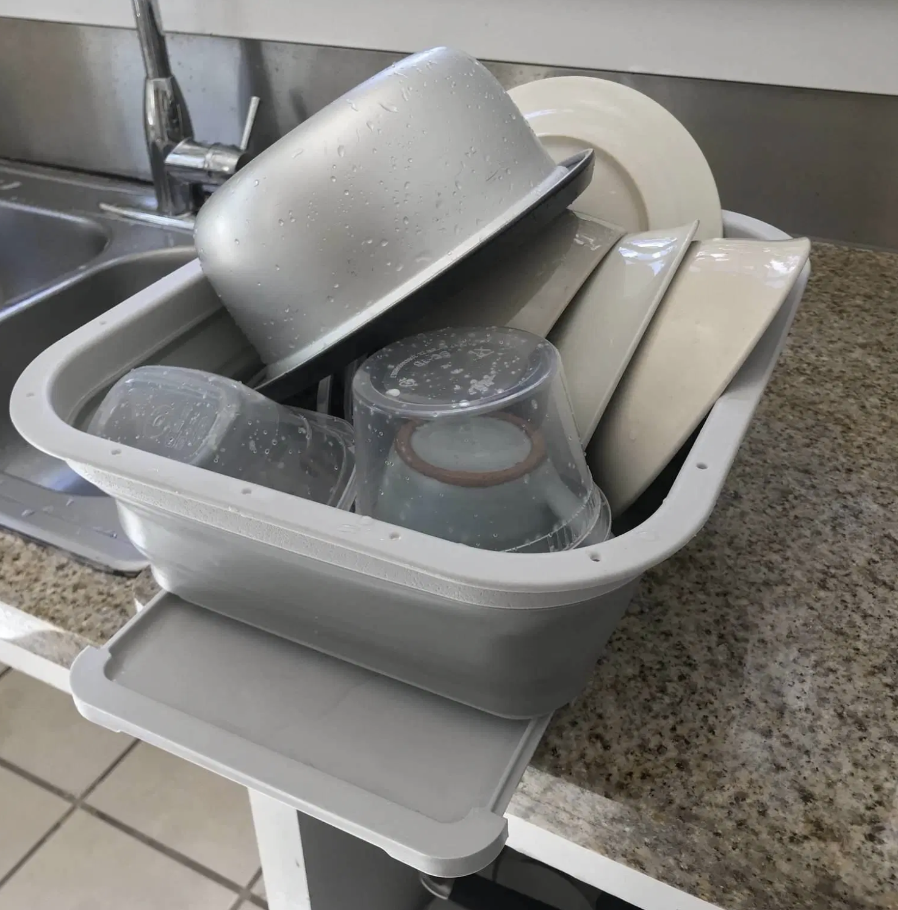

Original article published on my blog here.
I used to be so procrastinated at doing dishes. Sometimes I wouldn’t wash any of them till I ran out of clean dishes or plates to use.
It’s easier to just sit in front of my laptop, working, watching Netflix for hours, and wash only what I need to use at that moment in the sink inside my own bathroom – a spoon, a bowl, etc., without taking all of them out for a proper clean in the shared kitchen, although that is just five seconds to reach. I was that lazy.
When the pandemic hit Seattle, and stay-at-home order was affected, it was the same time as my spring quarter at Seattle Central College started. All the study transitioned to online entirely. I study three courses, which means plenty more hours in front of the laptop. Even though I still go to work part-time, my hours got cut, so I stay in my apartment much more than before.
It’s the period of life that I spend time in front of the screen the most – day till night, 8-10 hours a day. It reaches the point that I feel it dehumanizes me. No matter what I learn or accomplish on the laptop with my hands typing, eyes staring, and brain thinking, it sometimes feels like I got nothing done in reality. It can easily feel like this is all a joke. Sometimes, I wonder if my classmates with little profile images popping here and there on our writing discussion even actually exist, or they are just virtual characters like in an online game.
Instead of feeling the comfort sitting on my adjustable, spinnable, soft chair during those hours, I get backache. I lose a sense of other physical activities. I used to feel eager and excited at working and studying at home because I can control my own hours, but I discovered that I’m not a person with solid boundaries and discipline. Not yet. So thinking about having to read, learn, meet virtually, finishing homework online, it drains me – mentally and physically.
What surprises me is the delight when I take a break from the laptop, to gather those used bowls, dishes, and utensils and carry them out to the kitchen. The moments when I rinse the dishes, scrub the sponge on the dish soap bar and then onto each one of them, arrange them into my dish rack container, and drain the water, I feel joyful. I feel that this insignificant, unexciting activity suddenly becomes so meaningful and makes me satisfied – a physical activity that gives my brain and eyes a nice pause before another exhausting round begins again.
The joy that comes from observing and feeling how my hands getting (physical) things done makes me do dishes more often. It makes me feel so human amidst all this whirlwind of virtuality.